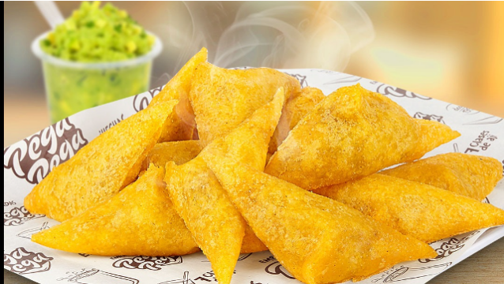
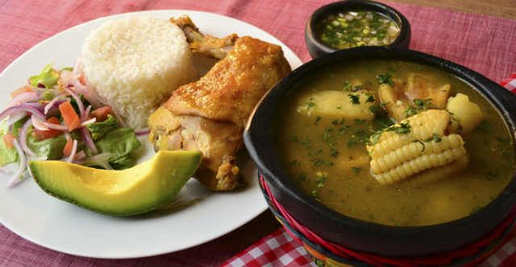
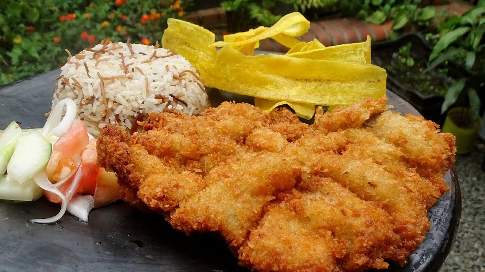
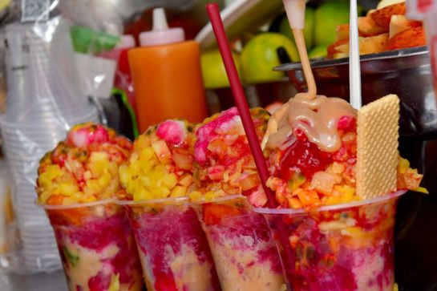
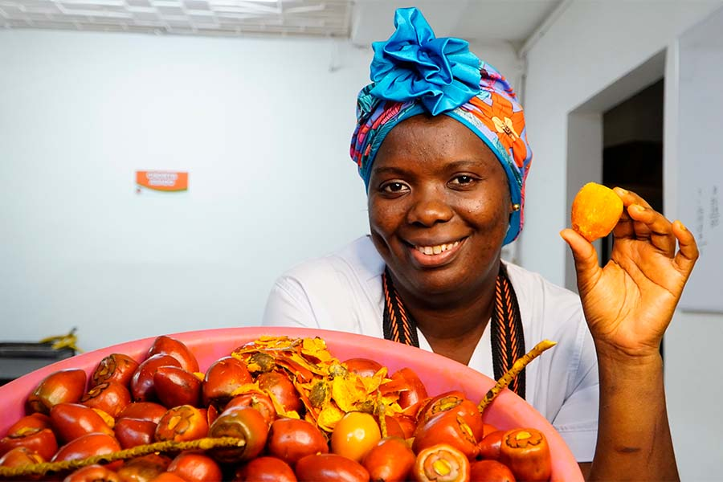
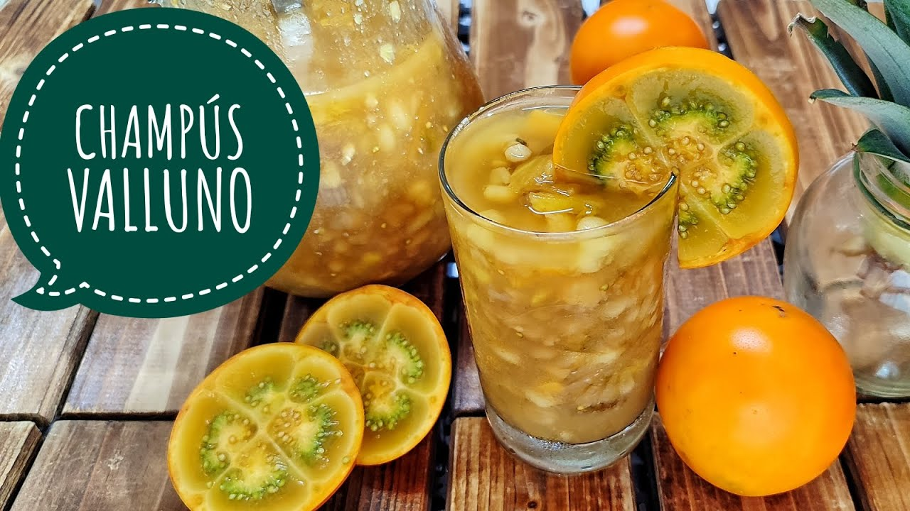

Click the button to change language

Empanadas
In Cali, the empanada is an essential element of the local cuisine, characterized by its crispy corn dough and traditional fillings of potato and meat. These are almost always served with homemade hot sauce and lime.
More information
Image taken from:

chicken stew
Chicken sancocho in Cali is the signature dish for Sundays and family outings. It's characterized by its slow cooking (ideally over a wood fire), the use of free-range chicken, and traditional side dishes like rice, plantain chips, and salad.
More information
Image taken from:

Chuleta
The chuleta valluna is one of the most emblematic dishes of Cali and the Valle del Cauca region. It consists of a cut of pork loin (although it can also be made with beef or chicken) breaded and fried until crispy on the outside and juicy on the inside.
More information
Image taken from:

Cholado
Cholado or cholao is a sweet and refreshing treat iconic to the Cauca Valley, Colombia, that combines textures of dessert, beverage and fruit salad.
More information
Image taken from:

chontaduro
Cholado or cholao is a sweet and refreshing treat iconic to the Cauca Valley, Colombia, that combines textures of dessert, beverage and fruit salad.
More information
Image taken from:

Champus
Champús caleño is one of the most emblematic and traditional drinks of Cali and the Valle del Cauca region. It is characterized by being a refreshing and thick mixture of corn, panela (unrefined cane sugar), and acidic fruits, always served very cold.
More information
Image taken from: